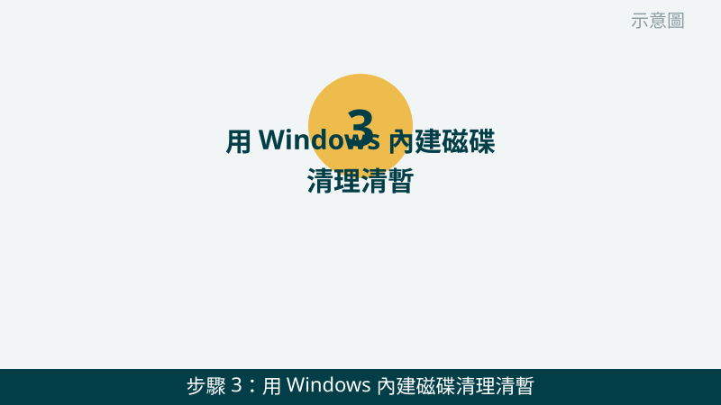
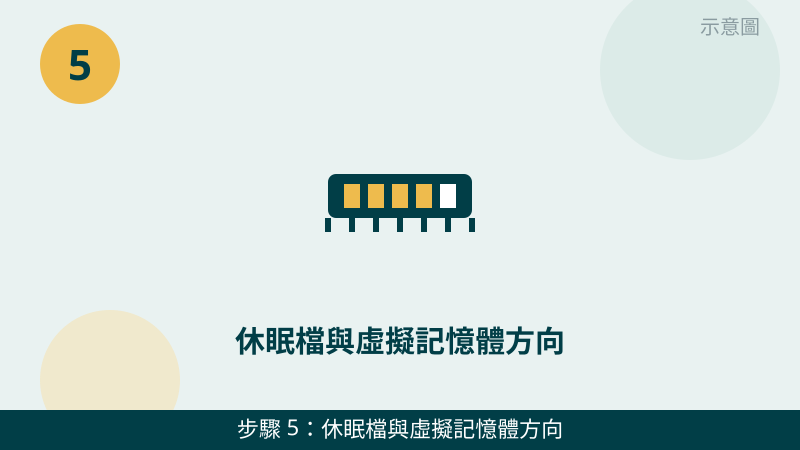

C 槽突然變紅、一直跳空間不足，確實很惱人。但請先放心：空間通常不是被一個檔案吃掉的，而是桌面、下載資料夾、暫存檔、少用的程式慢慢堆出來的。先看清楚是誰在吃空間，再動手清，才不會刪錯東西。
開始之前先跟您說明一個判斷原則：「自己的檔案」和「系統與程式的檔案」要分開處理。自己的文件、照片、影片可以安心移到別槽；系統資料夾、已安裝的程式不要自己剪下貼上。您先把儲存空間的分類畫面拍下來，檢查時會更有方向。
C 槽空間畫面先傳給我們看
把儲存空間的分類、C 槽剩餘空間拍下來傳 LINE，通常能先看出是哪一類在吃空間。先免費評估、報價透明，確認後再預約維修。
台中電腦 C 槽爆滿自救檢查清單（由簡到難）
- 1. 先開儲存空間設定，看是誰在吃空間。請到「設定」→「系統」→「儲存空間」，看系統、應用程式、文件、暫存檔各佔了多少。怎麼判斷：哪一類數字最大，就先從那一類下手；如果「系統」佔得特別大，先不要自己動手，請先拍照問我們。
示意圖（非官方截圖） - 2. 先整理桌面與下載資料夾。很多人習慣把檔案存在桌面或下載資料夾，久了就默默把 C 槽塞滿。請先把大型影片、照片、安裝檔移到 D 槽或外接硬碟，確定用不到的安裝檔再刪除。怎麼判斷：移完之後看 C 槽剩餘空間有沒有明顯回來；移完還是很滿，再往下一類查。
示意圖（非官方截圖） - 3. 用 Windows 內建磁碟清理清暫存與更新暫存。請在 C 槽按右鍵 →「內容」→「磁碟清理」，勾選暫存檔、資源回收筒、Windows 更新清理等項目後再清理。怎麼判斷：清理完看 C 槽多出多少空間；如果清完只多一點點，代表大頭不在暫存檔，請回第 1 步看其他分類。

示意圖（非官方截圖） - 4. 解除安裝少用的大型程式與遊戲。請到「設定」→「應用程式」→「已安裝的應用程式」，依大小排序，看哪些大型程式或遊戲已經很久沒用。怎麼判斷：解除安裝後 C 槽空間有沒有回來；不確定某個程式能不能刪時，請先拍照問我們，不要憑感覺刪除。
示意圖（非官方截圖） - 5. 休眠檔與虛擬記憶體方向：先看、不要自己亂關。系統保留的空間裡，可能包含休眠檔與虛擬記憶體，這是 Windows 正常運作需要的部分，佔用空間大不一定是異常。請不要自己用指令關閉休眠或亂改虛擬記憶體設定，改錯會讓電腦不穩定。怎麼判斷：如果第 1 步顯示系統類佔用特別大，請把畫面拍照傳給我們，由我們先幫您判斷再決定怎麼處理。

示意圖（非官方截圖） - 6. 刪檔前先備份，再養成定期整理的習慣。動手刪除任何重要檔案之前，請先把照片、文件、工作檔案備份到外接硬碟或雲端，確認備份打得開再刪除。之後可以定期看一次儲存空間，桌面和下載資料夾不要長期堆檔案。怎麼判斷：備份完成、空間清出來、重開機後速度有沒有回來一些，就是這次整理有沒有效最直接的指標。
示意圖（非官方截圖）
別再自己試了
- 不要刪不認識的系統資料夾，例如 Windows、Program Files、System32，刪錯會讓系統打不開或程式故障
- 不要一次全選刪除、不要把別人的檔案或公司檔案一起刪掉，刪之前請先確認那是您自己的檔案
- 不要用來路不明的清理軟體「一鍵清理」，有些會順手刪掉您還需要的檔案或系統設定
- 硬碟傳出異音、檔案莫名打不開或消失時，請先停手保資料，不要再反覆刪除或安裝東西，請先拍照問我們
- 不確定某個資料夾能不能刪時，請先拍照問我們，不要憑感覺刪除
如果您的電腦除了 C 槽爆滿，還伴隨變慢、開機很久，也建議順手看一下變慢篇：空間不足和變慢常常是同一件事的兩種表現。我們的檢測會把磁碟空間、硬碟健康、開機程式一起交叉比對，找出真正的原因再報價給您。
常見問題
台中電腦 C 槽爆滿，電腦會變慢嗎？
會。C 槽是系統碟，空間剩不到 10% 或只剩幾 GB 時，Windows 沒有足夠的暫存空間，開程式、開資料夾、系統更新都會明顯變慢。先照本文 6 步清出空間、重開機一次，通常速度就會回來一些；清完還是慢，再往硬碟健康方向查。
C 槽的檔案可以全部移到 D 槽嗎？
不可以全部移。您自己的文件、照片、影片、下載的檔案可以移到 D 槽或外接硬碟；但系統資料夾、已安裝的應用程式不要自己剪下貼上，移錯位置會讓程式打不開、甚至系統出問題。不確定某個資料夾能不能移時，請先拍照問我們，不要直接動手。
不小心刪錯檔案，還救得回來嗎？
請先停手，不要再存新檔案進去，也不要再反覆刪除或安裝東西，以免把刪掉的資料蓋掉。先看資源回收筒還在不在，再把狀況拍照傳 LINE 給我們，我們會先幫您判斷資料救援的方向；要完全確認，還是需要實機檢測，這部分評估不收費，請放心傳。